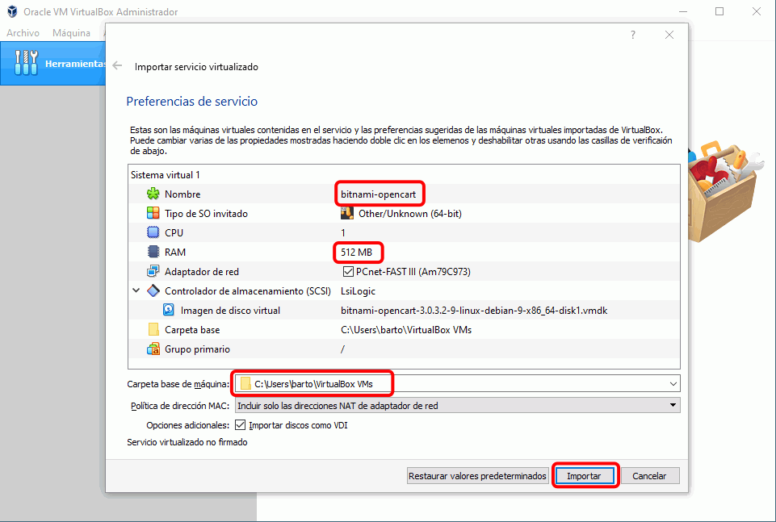
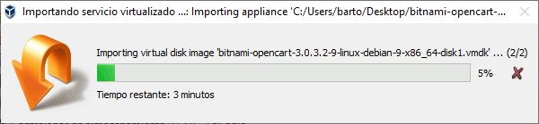
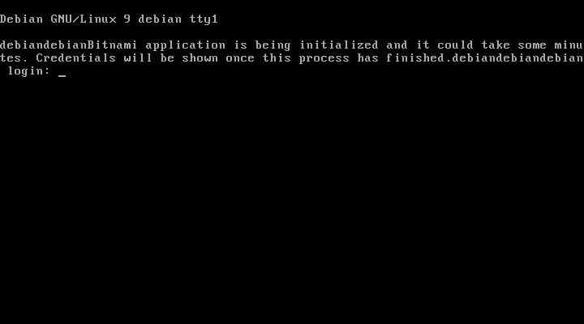
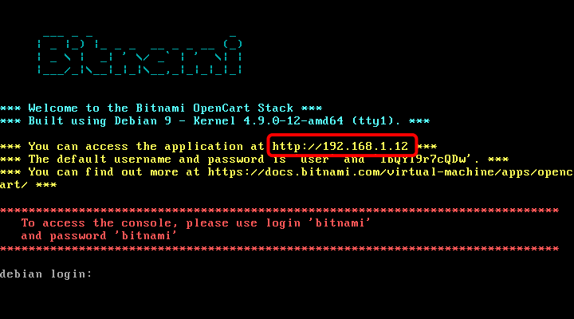
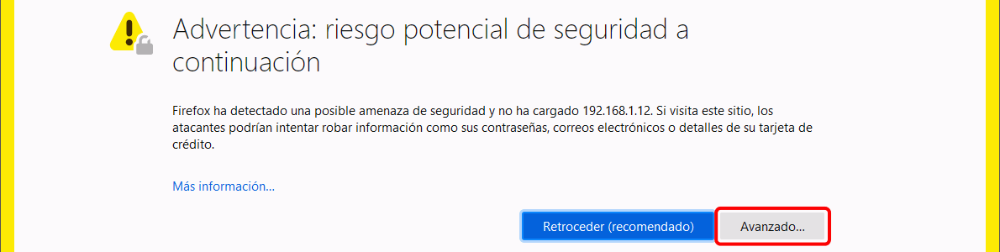

Bitnami (1) 2 - Máquina virtual con OpenCart
- Descargue la máquina virtual
La página de OpenCart de Bitnami es https://bitnami.com/stack/opencart:
La página de máquinas virtuales de OpenCart de Bitnami es https://bitnami.com/stack/opencart/virtual-machine:

Para importar en VirtualBox la máquina virtual, haga doble clic en el fichero .OVA. Puede modificar el nombre de la máquina, la cantidad de memoria RAM o la ubicación de la imagen de disco virtual antes de hacer clic en el botón Importar.

La importación tardará unos minutos:

Al terminar la importación, la nueva máquina virtual se mostrará en VirtualBox.
- Acceda a la tienda
Espere a que se complete el arranque de la máquina virtual:

Cuando se complete el arranque, la dirección IP de la máquina virtual se mostrará en la pantalla inicial de la máquina virtual:

Para acceder a la tienda escriba la IP que se muestra en la pantalla. En la captura de ejemplo sería http:/192.168.1.11/
- Acceda como administrador
El nombre del usuario administrador y su contraseña se muestran también en la pantalla inicial de la máquina virtual:
Nota: Si no funciona el usuario y contraseña indicado en la pantalla, pruebe user y bitnami.
Para acceder al panel de administración de la tienda se debe añadir /admin a la dirección IP. En la captura de ejemplo sería http:/192.168.1.11/admin
La página redirigirá a una dirección segura https. Como el certificado incluido en la máquina virtual no es seguro, Firefox muestra un aviso. Haga clic en Avanzado para añadir una excepción para este sitio.

Se mostrará un cuadro explicando el problema. Haga clic en "Añadir excepción ... " para añadir una excepción para este sitio.
Se abrirá una ventana pidiendo confirmación. Haga clic en "Confirmar excepción de seguridad" para añadir una excepción para este sitio.

{kind=link}